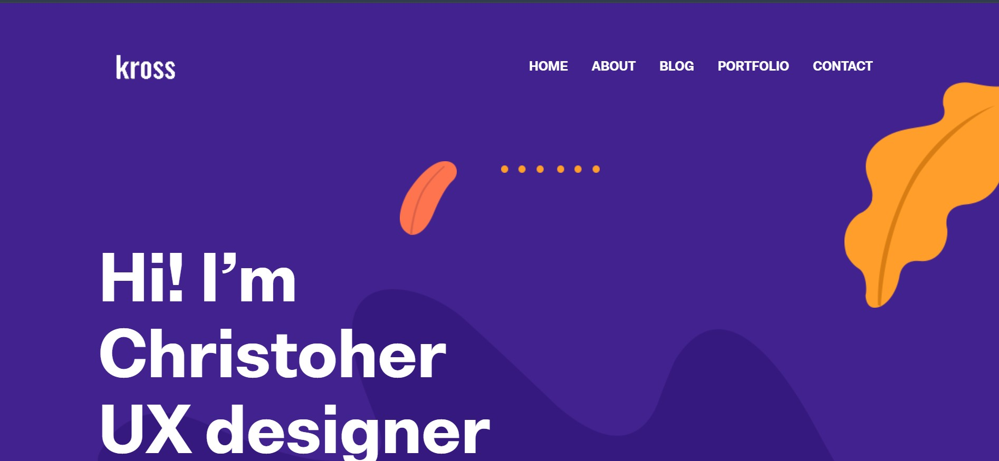
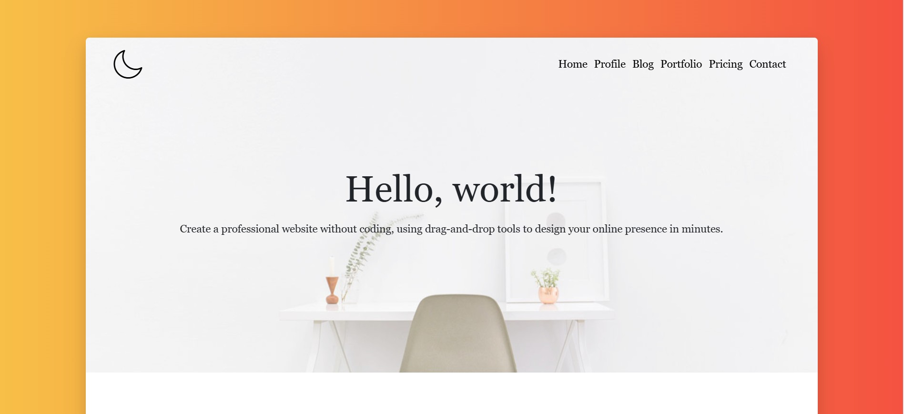
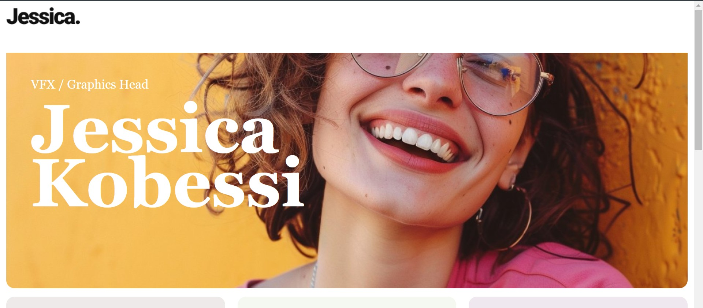
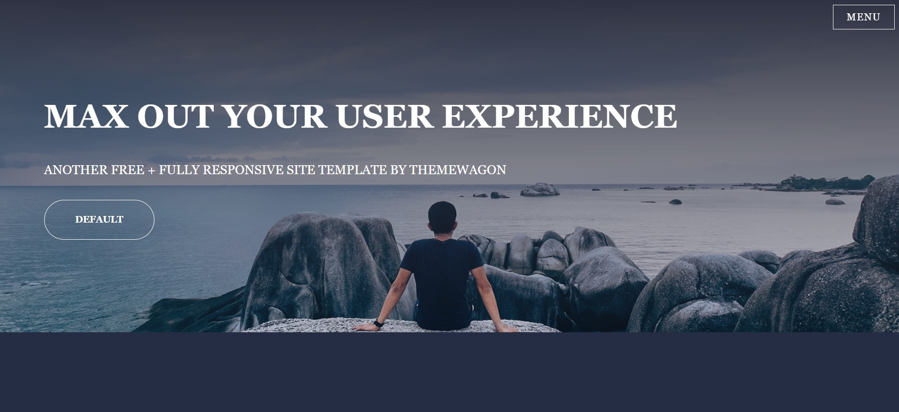
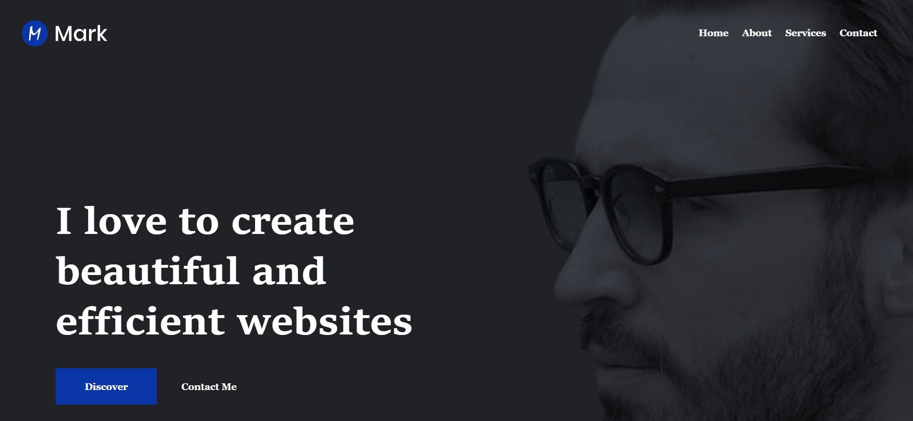
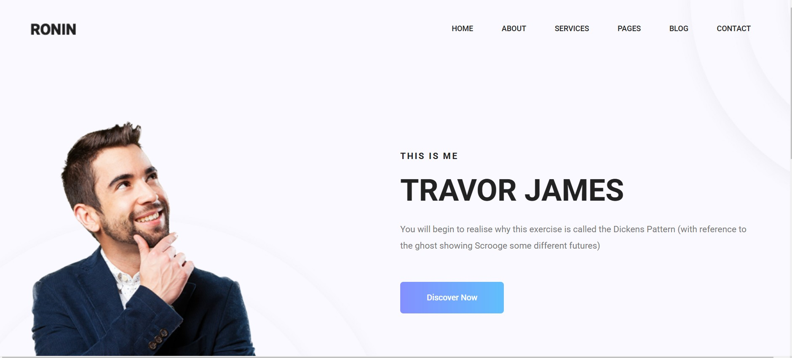

Clean, modern design with a light grey background, bold black and orange typography, and a two-column layout. It features a professional image, clear navigation, social media icons, and a prominent "Hire Me" button for easy engagement.
Modern design with a vibrant purple gradient background, bold white typography, and a structured two-column layout featuring an illustrative graphic. It includes a clean navigation bar and a prominent "Get in Touch" button, enhancing user engagement and accessibility.

A bold and modern designer portfolio with a deep purple background and vibrant orange accents. The clean layout features bold white typography for a strong first impression. A minimalist navigation bar provides easy access to key sections, while abstract design elements enhance creativity and innovation.

A modern and minimalist web design featuring a warm gradient background and a centered white content box. It includes a structured navigation menu, a crescent moon logo, and a clean hero section with a bold headline, subheading, and a workspace image. The design emphasizes simplicity and user-friendliness.

A modern and vibrant web design featuring a bold, high-quality close-up image with a warm yellow background. The clean white header showcases a minimalist logo, while structured typography highlights her title. The design enhances personal branding with a bright, engaging aesthetic.

Features a dark navy-blue landing page with bold, centered white typography over a scenic ocean backdrop. It includes a prominent headline, supporting subheadline, a minimalist "DEFAULT" call-to-action button, and a streamlined "MENU" option in the top right corner.

Features a dark, minimalist landing page with bold white text showcasing a designer's statement. It includes a subtle background image of a person, a prominent headline, two call-to-action buttons, and a clean navigation menu at the top right.

The image shows a clean, modern landing page with a light background. It features a smiling man on the left, a bold introduction on the right, a brief description, and a gradient "Discover Now" button. The top navigation menu includes links to Home, About, Services, Pages, Blog, and Contact.